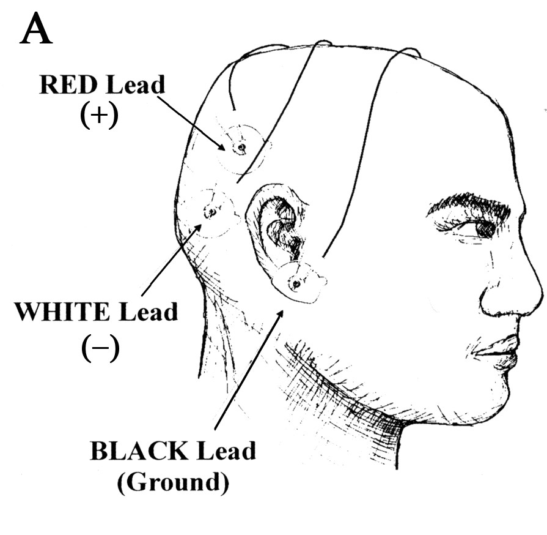

Developing the EEG
Electroencephalogram measurements have been mostly the same since 1929, when they were first measured by Hans Berger. The human brain generates signals that relates to body functions. Most are less than 100 microVolts and 100 Hz, and can be measured noninvasively by electrodes on the scalp. The low of amplitude of the signals is also affected by the composition of the human scalp and the conductance of skin, making the signal acquisition more complex. The small signals are prone to be easily lost from interference or poor connection/conductance, and will be so until they are amplified and become more robust. Electrical signals are captured using electrodes, which have many different designs. Optimal designs are made of Silver chloride, because Ag is a slightly soluble salt, and is good for skin-surface electrodes. Conductive gel may also be applied to the skin to help capture the signal. Electric noise is of utmost importance before amplification, to preserve the signal, and may come from many different places. Power Line interference (50Hz-60Hz) is the most significant contribution to noise. Internal noise may also contribute, which can be caused by resistive components, imperfections in components, and contact issues. It may be easier to test circuit designs using signal generator, but most signal generators cannot produce signals in the 100 microVolt range.